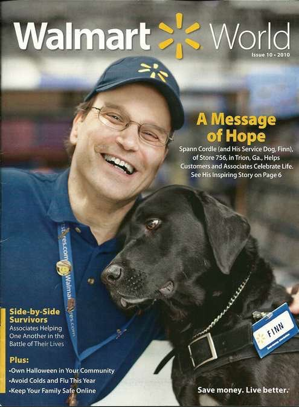
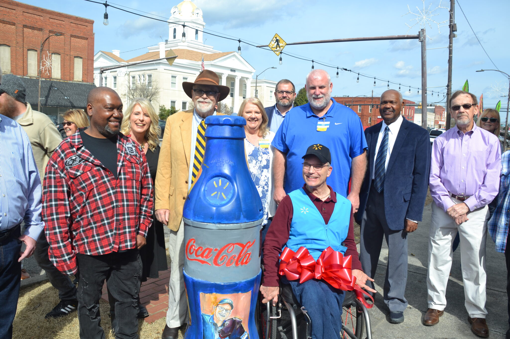
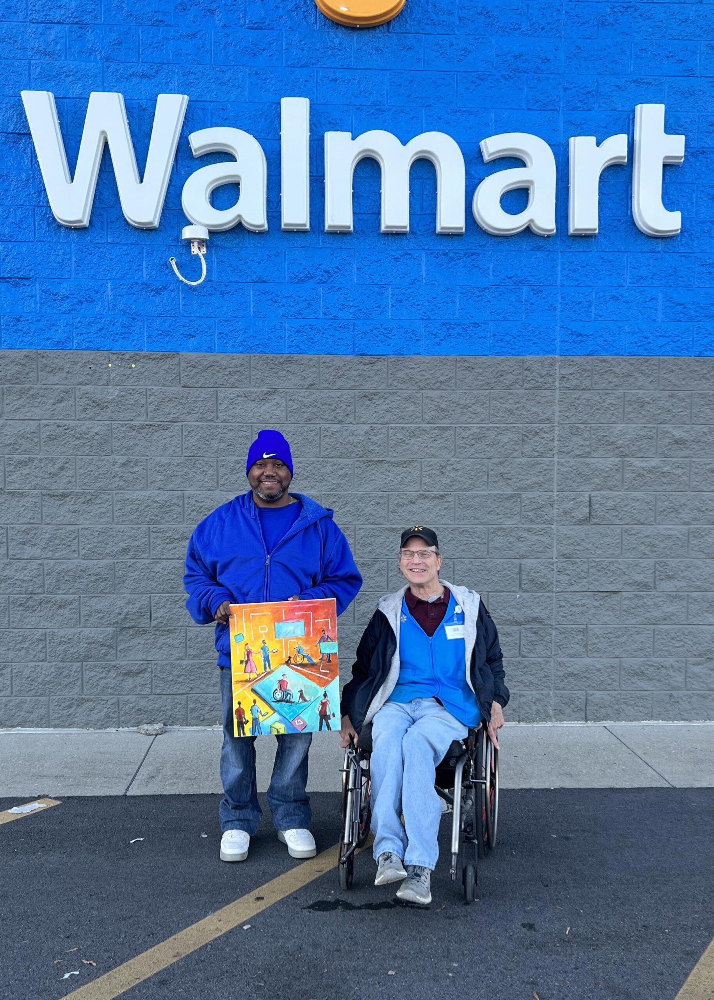

Who am I?
I made history when I successfully pioneered Walmart’s first associate service dog team, making possible jobs for hundreds of disabled persons. Living with CP, I have become a nationally known spokesperson for disabled persons in the workplace.

The Coke bottle installation is both an honor and an invitation to raise awareness for the disabled, and thanks given to Walmart for giving me the format to spread my message locally, nationally and internationally.
Read More

Artificial Intelligence appears to be the next coming form or revelation aimed at helping the disabled in a mechanical infused environment. If this new technology can indeed help to open doors and improve lives of the disabled I applaud it and wait anxiously to see positive results.
Read More
